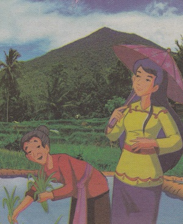
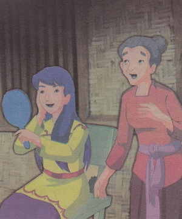
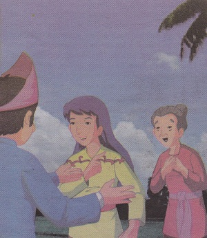
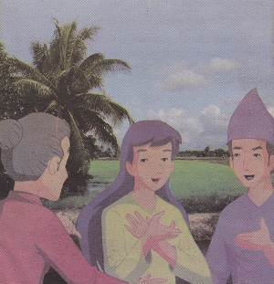
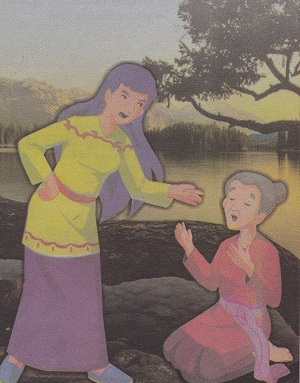
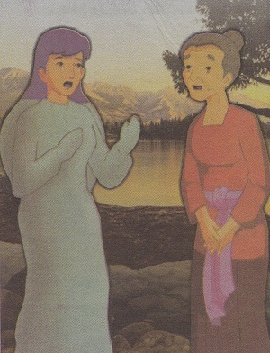

Batu Menangis
( Cerita Rakyat Kalimantan Barat )
Alkisah, didaerah terpancil di kalimantan barat , hiduplah seorag janda tua dengan seorang putrinya yang cantik jelita bernama Darmi. Sejak ayah Darmi meniggal, kehuidupan mereka menjadi susah. Untuk memenuhi kebutuhan hidup mereka, ibu Darmi bekerja di sawah atau ladang orang lain sebagai buruh upahan.
Sementara putrinya, Darmi, seorang gadis yang manja. Selain manja, ia juga seorang gadis yang malas. Kerjanya hanya bersolek dan mengagumi kecantikannya di depan cermin. Ia sama sekali tidak mau membantu ibunya mencari nafkah. Setiap kali ibunya mengajaknya pergi ke sawah, ia selalu menolak. Pada suatu hari, ketika ibunya hendak ke pasar, Darmi berpesan agar dibelikan sebuah alat kecantikan. Tapi, ibunya tidak tahu alat kecantikan apa yang dia maksud. Kemudian ibunya mengajaknya ikut ke pasar. Awalnya Darmi menolak, namun setelah didesak ia pun bersedia menemani ibunya ke pasar.
Setelah itu, berangkatlah mereka ke pasar secara beriringan. Si Darmi berjalan di depan, sedangkan ibunya mengikuti dari belakang. Meskipun keduanya ibu dan anak, penampilan mereka terlihat sangat berbeda. Di tengah perjalanan, Darmi bertemu dengan temannya yang tinggal di kampung lain. 
“Hei Darmi! Hendak kemana kamu?” tanya tamannya itu.
“Ke pasar!” jawab Darmi dengan pelan.
“Lalu, siapa orang dibelakangmu itu? Apakah dia ibumu?” tanya lagi temannya sambil menunjuk ibu Darmi.
“Tentu saja bukan ibuku! Dia adalah pembantuku,” jawab Darmi dengan nada sinis.
Laksana disambar petir ibu Darmi mendengar ucapan putrinya. Tapi dia terdiam sambil menahan ras sedih. Setelah itu keduanya pun melanjutkan perjalanan menuju pasar. Tidak lama berjalan, mereka bertemu lagi dengan seseorang.
“Hei Darmi! Hendak kemana kamu?” tanya orang itu.
“Hendak ke pasar!” jawab Darmi singkat.
“Siapa yang dibelakangmu itu?” tanya lagi orang itu.
“Dia pembantuku,” jawab Darmi mulai kesal dengan pertanyaan-pertanyaan itu.
Jawaban yang dilontarkan Darmi itu membuat hati ibunya semakin sedih. Akhirnya, sang ibu berhenti lalu duduk di pinggir jalan. Beberapa kali Darmi bertanya, namun sang ibu tetap saja tidak menjawab. Sesaat kemudian, Darmi melihat mulut ibunya komat-kamit sambil mengadahkan kedua tanagnnya ke atas. Ia berdoa kepada Tuhan agar menghukum anaknya yang durhaka itu. Bebrapa saat kemudian, tiba-tiba langit menjadi mendung. Petir menyambar dan suara-suara guntur bergemuruh memekakkan telinga.
Pelan-pelan kaki Darmi berubah menjadi batu. Darmi pun mulai panik. Namun, apa hendak dibuat, nasi sudah menjadi bubur. Hukuman itu tidak dapat lagi dihindari. Perlahan-lahan seluruh tubuh Darmi berubah menjadi batu. Gadis durhaka itu hanya bisa menangis menyesali perbuatannya. Tidak lama, cuaca pun kembali terang seperti sedia kala. Seluruh tubuh Darmi telah menjelma menjadi batu. Oleh masyarakat setempat, batu itu diberi nama Batu Menangis.